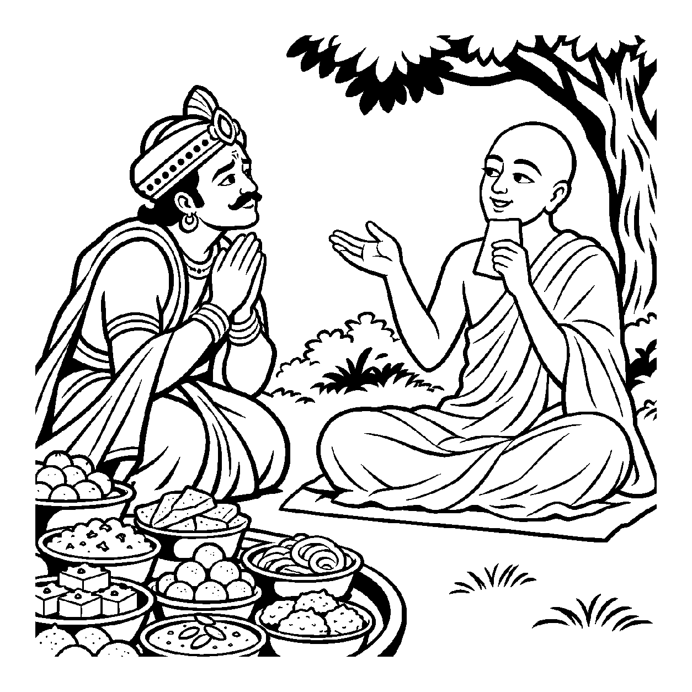

ભોજન સમારંભમાં એક અતિથિ આસન પર બેસીને સુવર્ણ થાળીમાંથી ઘી અને ગોળના બનેલા સ્વાદિષ્ટ લાડુ ખાય છે. ભોજન પત્યા પછી તે પેટ પર હાથ ફેરવીને તૃપ્તિપૂર્વક કહે છે: "આજે તો મેં બહુ જ સ્વાદિષ્ટ ભોજન ભોગવ્યું, મારું હૃદય તૃપ્ત થઈ ગયું!" વાસ્તવમાં લાડુ એ ઘઉં, ઘી અને ખાંડ જેવા જડ પુદ્ગલોનો પિંડ છે. તે દાંત વડે ચવાયો, જીભના સ્વાદતંતુઓ પર સ્પર્શ્યો અને જઠરમાં ગયો; આ તમામ ક્રિયાઓ પુદ્ગલની પુદ્ગલ સાથેની જ ભૌતિક ક્રિયાઓ હતી. અરૂપી ચેતન આત્મા ક્યારેય લાડુના કણોને ગળી શકતો નથી. છતાં પણ બહાર પડેલા પુદ્ગલ પદાર્થોના ઉપભોગનો ભોક્તા આત્માને કહીને — "જીવ મિષ્ટાનનો ભોક્તા છે, જીવ રેશમી વસ્ત્રો કે રથ-વાહનનો ભોક્તા છે" — એમ બાહ્ય પદાર્થો પર ભોક્તૃત્વનો આરોપ કરવો તેને 'પરભોક્તૃત્વ ઉપચરિત અસદ્ભૂત વ્યવહાર' કહેવાય છે.
આ નય ઉપચરિત અસદ્ભૂત વ્યવહારની પરાકાષ્ઠા છે. અહીં શરીરથી પણ બહાર રહેલાં વસ્ત્ર, આભૂષણ, શય્યા, મકાન કે વાહનોના ઉપભોગનો આરોપ ચેતન જીવ પર કરવામાં આવે છે. પરમાર્થથી આત્મા કેવળ પોતાના જ્ઞાનાનંદ સ્વભાવનો ભોક્તા છે; પુદ્ગલનું ભક્ષણ કે ભોગવટો પુદ્ગલથી જ થાય છે. પરંતુ અજ્ઞાની આત્મા તે બાહ્ય પદાર્થોમાં ઇષ્ટ-અનિષ્ટની કલ્પના કરીને સુખ-દુઃખનો અનુભવ કરે છે, માટે વ્યવહારની ભાષામાં તેને બાહ્ય વિષયોનો ભોક્તા કહેવાય છે.
આ નય સાધકને સમજાવે છે કે બાહ્ય ભોજન કે વિષયો ક્ષણિક છે અને શરીર પૂરતા છે; આત્માનું સાચું અમૃત તો પોતાના અંતરંગ સ્વભાવમાં જ વહી રહ્યું છે.
મિષ્ટાન વસ્ત્ર ને વાહનો, પુદ્ગલ તણો વિહાર;
'ભોગવ્યું મેં' કહી કરે, જીવ જગત વ્યવહાર.
રસના સ્વાદે તૃપ્ત ના, આતમ તત્વ અરૂપ;
બાહ્ય ભોગ ઉપચાર તજી, લહે અમૃત અનૂપ.
શરીર અને બાહ્ય ઉપકરણો સાથેના સંબંધને સાધન માત્ર સમજી મોહના બંધનો શિથિલ કરવાં.

રાજા રત્નસેને પોતાના મહેલમાં છપ્પન ભોગનો અતિ ભવ્ય થાળ તૈયાર કરાવ્યો હતો. કેસરિયા દૂધપાક, બદામનો શીરો અને વિવિધ પકવાનોથી સુગંધ ફેલાઈ રહી હતી. રાજાએ પેટ ભરીને ખાધું, પણ થોડી જ વારમાં તેનું પેટ ભારે થઈ ગયું, અજીર્ણ થયું અને છાતીમાં બળતરા થવા લાગી. તે પલંગ પર આળોટવા લાગ્યો અને બોલ્યો: "અરેરે! આ છપ્પન ભોગે મને મારી નાખ્યો! હું ભોજનનો ભોક્તા બનવા ગયો અને ભોજને મને રોગી બનાવી દીધો! આ કેવો સંસાર કે સ્વાદ ક્ષણિક છે અને પીડા અનંત છે!" તે ભોજનના સ્વાદ અને પીડા વચ્ચે ફસાઈને અશાંત થઈ ગયો.
તે જ સમયે મહેલના ઉપવનમાં એક ધ્યાની મુનિ પધાર્યા હતા જેઓ ઘણા દિવસોથી નિર્જળા ઉપવાસમાં મગ્ન હતા. રાજા ધીમે ધીમે તેમની પાસે ગયો અને પૂછ્યું: "મુનિરાજ! આપ દિવસોથી અન્ન વગર છો, છતાં આપના મુખ પર આટલું અદ્ભુત તેજ અને પરમ તૃપ્તિ કેમ છે? અને મેં છપ્પન ભોગ આરોગ્યા છતાં હું દુઃખી કેમ છું?" મુનિશ્રીએ અમૃતવાણીમાં કહ્યું: "રાજન! પરભોક્તૃત્વ ઉપચરિત અસદ્ભૂત વ્યવહારને ઓળખો! છપ્પન ભોગ એ જડ પુદ્ગલ હતો જેને તમારી જીભે સ્પર્શ્યો અને જઠરે સ્વીકાર્યો. તમે માન્યું કે 'આ ભોજન મારા આત્માએ ભોગવ્યું', એ કેવળ ઉપચારિત ભ્રમણા હતી! આત્મા કદી રોટલી કે લાડુ ખાતો નથી; આત્મા તો કેવળ પોતાના જ્ઞાનરસનું પાન કરે છે. મેં બહારનું અન્ન છોડ્યું પણ ભીતરના આત્માનંદનું પાન કર્યું, માટે હું સદા તૃપ્ત છું!" રાજાને સત્ય સમજાયું. બાહ્ય સ્વાદોની ક્ષણિકતા સમજાતાં જ તેની લાલસા શમી ગઈ. તેણે અનાસક્ત ભાવે આહારનો સંયમ સ્વીકાર્યો અને તેનું ચિત્ત પરમ વિશ્રામમાં શાંત થઈ ગયું.
જો જીવ બાહ્ય વિષયભોગોને જ આત્માનું સાચું સુખ અને વાસ્તવિક ભોગવટો માની લે, તો તે વિષયાસક્તિના કાદવમાં ખૂંપીને અનંત સંસાર વધારે છે. પરદ્રવ્યો કે ક્ષણિક સંયોગોને જ સર્વસ્વ માની લેવાથી મમત્વ અને પરિગ્રહનો ભાર વધે છે, જે ચિત્તને સદા આકુળ-વ્યાકુળ રાખી આધ્યાત્મિક જાગૃતિને રૂંધી નાખે છે.
આ નય શરીર નિર્વાહ પૂરતો આહાર સ્વીકારીને પણ આત્માની પરમ અનાહારી અને અભોક્તા દશા પ્રગટાવે છે, જેથી જીવ પોતાના આત્મસ્વરૂપમાં સ્થિર થાય છે. તે વ્યવહારિક સંયોગોની મર્યાદા દર્શાવીને પણ આંતરિક ગુણો પ્રગટાવવાની પ્રેરણા આપે છે, જેથી સાધક નિજ ચૈતન્ય સ્વરૂપમાં મહામૌનમાં અંતર્લીન થઈ જાય છે.